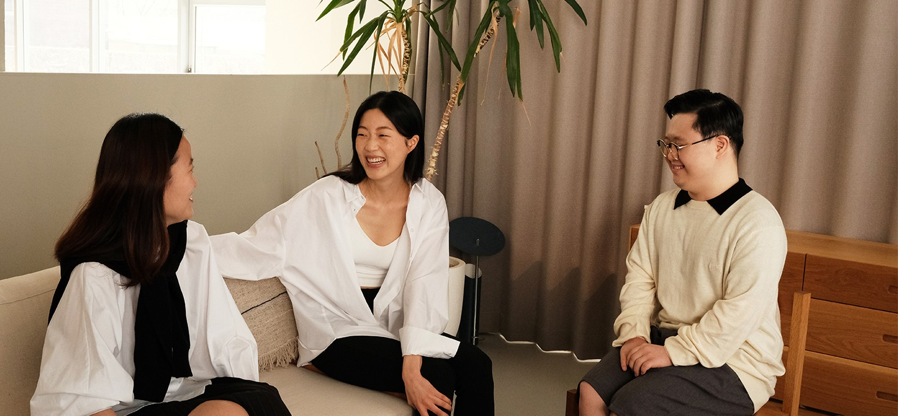

Our Mission
비장애인과 장애인이
함께 만드는 지속 가능한 일상

동구밭은 만듭니다.
올바름을
우리 몸과 환경에 유해한 성분을 배제하고
안전하고 윤리적이며 효과적인
원료를 사용합니다.
가능성을
나이, 성별, 장애 여부와 상관 없이 우리 모두가
100%의 존재임을 믿습니다.
도시, 시골, 한옥, 당신이 어느 곳에 있든 응원합니다.
더 나은 내일과
나상자 하나, 완충재 하나까지도 더 나은 대안을
끊임없이 고민합니다. 익숙하게 버려지는 것들에
새로운 가치를 찾습니다.